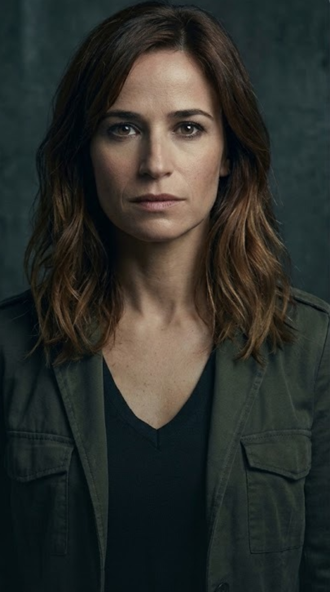
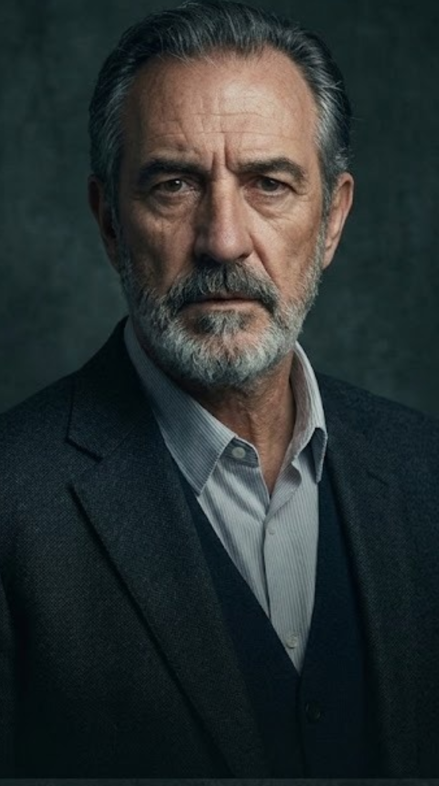
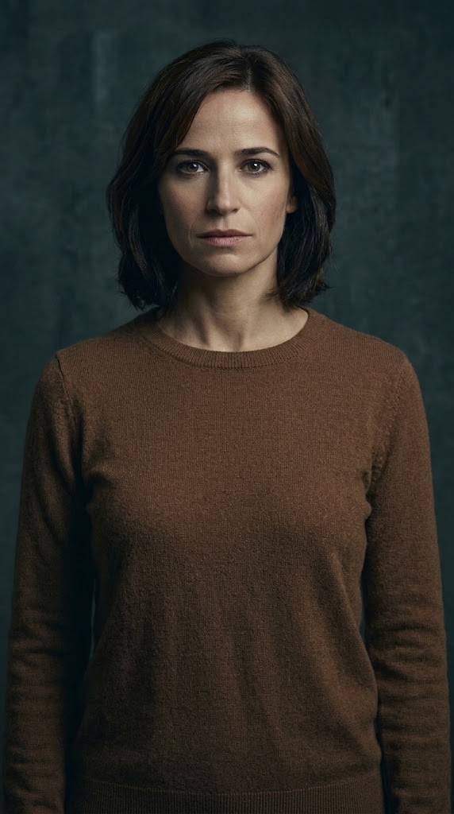

Amaia Salazar
Inspetora treinada no FBI que lidera a investigação dos assassinatos enquanto enfrenta seus
próprios traumas de infância.
Onde a investigação policial se confunde com o mistério e as lendas do vale.
O Guardião Invisível (Dolores Redondo) é um viciante thriller policial que une a investigação
criminal moderna ao mistério e ao folclore do Vale do Baztán. A trama acompanha a inspetora
Amaia Salazar de regresso à sua terra natal para caçar um assassino em série, num cenário
sombrio onde segredos de família, traumas do passado e lendas ancestrais se entrelaçam
numa corrida contra o tempo.

Inspetora treinada no FBI que lidera a investigação dos assassinatos enquanto enfrenta seus
próprios traumas de infância.

Policial veterano e ressentido que cria tensões na equipe por não aceitar a liderança de Amaia.

Tia protetora conectada ao misticismo e ao tarô, que ajuda Amaia a compreender o folclore local.

Irmã mais velha amargurada e controladora que administra a tradicional padaria da família.